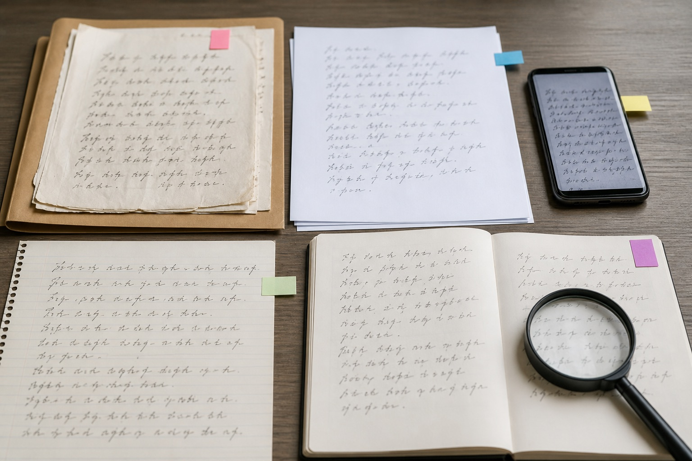

先别急着问准不准——笔迹鉴定结果取决于这些材料条件
咨询笔迹鉴定时，最常听到的一句话是“到底准不准”。这个问题像拿着一张模糊照片问能不能看清细节：先要知道照片从哪里来、压缩过几次，以及有没有可供对照的清晰材料。

原件和清晰图片承担的任务不同
原件能够保留纸张、墨迹和书写痕迹的原始状态，清晰图片便于前期查看和归档，但二者不是同一种材料。只有手机截图时，应说明来源和转发过程；能够找到扫描原图或纸质原件时，则不要用截图替代。
“笔迹鉴定准确吗”之所以没有脱离条件的统一答案，正是因为每个案例能看到的信息不同。材料完整、来源清楚、对比样本合适，才有讨论判断范围的基础。
同期自然样本比临时照写更有解释力
对比样本应尽量接近待分析文件的形成时间，并来自日常自然书写。年代跨度过大，个人书写习惯可能已经变化；临时、刻意放慢的抄写，也未必能代表平时状态。
模仿笔迹涉及连续文字时，可观察的相同字和整体节奏通常更多；模仿签名、模仿签字篇幅较短，更需要多份同版本的自然签写。不同材料不能只按关键词归类，还要看它们的形成场景。
流程的第一步不是立即下结论
常见的笔迹鉴定流程通常从确认委托事项、清点材料和判断检材条件开始，再决定需要哪些补充样本。寻找笔迹鉴定机构时，应先问清接收什么材料、是否需要原件、样本时间怎样要求，而不只是比较一句口头承诺。
“笔迹鉴定机构哪里有”属于明确的办事型搜索。实际沟通时，把文件页数、形成时间、目前持有原件还是复印件一次说清，比只发一张局部图更容易得到有用答复。
四类信息放进同一张清单
清单可以分为待分析文件、自然样本、文件来源和图像版本四栏。每份材料写清日期、页码及是否为原件。这样整理后，即使需要补充，也能准确指出缺的是哪一类，而不是把相似图片重复发送。
读者常问
只有一个字可以做笔迹鉴定吗？
单字可观察的信息有限，能否开展要结合字形复杂度、原件状态和对比样本，由接收材料的机构具体判断。
自然样本越多越好吗？
不是简单越多越好。来源明确、时期接近且包含可比特征的样本更重要。
先发手机照片有没有意义？
可用于初步说明材料情况，但应保留原图，并提前说明纸质原件是否存在。